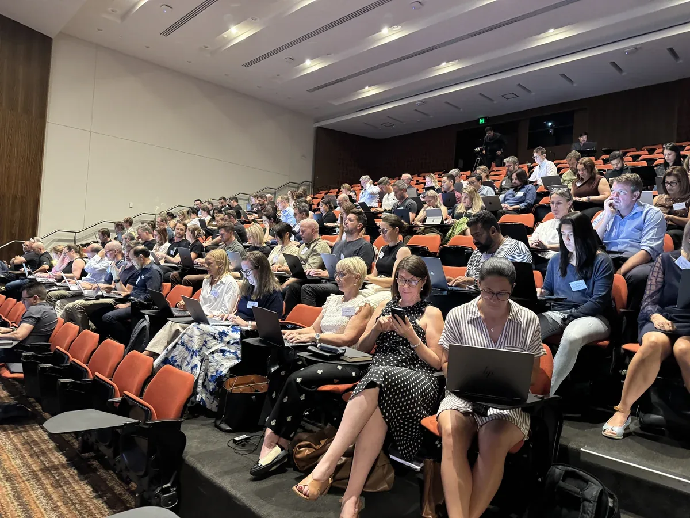

The marketing landscape in 2026 is defined by complexity. Those who treat marketing as a systems problem, powered by clean data and defined workflows, will win. Here are the eight trends reshaping how companies reach and convert customers.
1. Vibe Marketing: Marketers Building Their Own Tools
Marketers are no longer waiting for MarTech vendors to solve their problems. They're using AI platforms like Lovable, Bolt, and Replit to build custom tools that fit their exact workflows.
The MarTech Conference is running a Vibe Marketing Lab, and the best tool-builders are hitting seven-figure salaries. This is a power shift from buying pre-built platforms to building what you need.
2. Digital Twins: The Avatar Era Begins
The Zoom CEO didn't show up to earnings calls in person. An AI avatar did it for him. That's not science fiction; it's 2026.
HeyGen Digital Twins can replicate anyone across 175 languages. They need just one photo. The real problem isn't building the twin. It's knowing what the twin should say and ensuring consistency across every touchpoint.
3. Trust Is the Only Moat Left
4.6 billion pieces of content are created daily. In that noise, human-generated content generates 5.4 times more traffic than AI-generated content.
There's a crucial distinction emerging: audiences versus communities. An audience scrolls. A community shows up because they trust you. That trust becomes your only defensible position.
Audience
Passive. People scrolling your content. No deeper engagement. High churn.
Community
Active. People who choose to show up because they trust you. Loyal. Engaged.

4. Stop Broadcasting, Start Co-Creating
Broadcasting is dead. The brands winning in 2026 are the ones giving up control and letting their audience shape the message.
Co-creation builds trust. It requires vulnerability. It means your customers become your storytellers. Brands that can't let go of the megaphone won't survive this shift.
5. AI Commerce: Google's Universal Commerce Protocol
Google launched the Universal Commerce Protocol in January 2026. AI agents can now surface your products in ways that bypass traditional discovery channels.
66 percent of Gen Z uses AI for research before buying. Companies seeing traffic jumps of 1,200 percent from AI sources. But there's a catch: messy data makes you invisible to AI agents.
6. Autonomous Marketing Agents Are the New Ops Layer
Salesforce Agentforce, HubSpot Breeze, Klaviyo Agents. The software is ready. The market is projected to hit 1.3 trillion dollars by 2029.
But tools don't win battles. Execution does. Three things kill autonomous marketing adoption: untrained leaders, messy data, and workflows nobody documented.
7. Answer Engines Replaced Search Engines
Search engine optimization is dead. Answer engine optimization is the new game.
AI tools like ChatGPT and Perplexity are generating 6 times higher 404 rates because they're returning outdated or wrong information. Your content needs to be structured, consistent, and backed by third-party credibility to show up in answers.
AEO basics: Structured data. Consistent messaging. Third-party credibility signals.
8. The Funnel Collapsed Into a Single Click
TikTok Shop. Shoppable video. Instagram checkout. The old marketing funnel (awareness, consideration, decision) doesn't exist anymore.
Old Model
The Funnel. Awareness. Consideration. Decision. Multiple touchpoints over weeks or months.
New Model
The Moment. See. Click. Buy. Everything happens in seconds.
Marketing now happens in moments. A person sees something. They buy it. That's the entire funnel. Your job is to be there in the moment and make friction disappear.
The Underlying Trend
Marketing is a systems problem now. Winners are leaders who understand how AI and humans work together, who own clean data, and who document their workflows. This isn't about one tactic. It's about building an operating system for marketing.